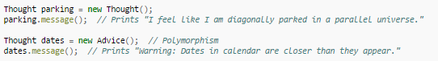

Method overriding, in object oriented programming, is a language feature that allows a subclass or child class to provide a specific implementation of a method that is already provided by one of its superclasses or parent classes. The implementation in the subclass overrides (replaces) the implementation in the superclass by providing a method that has same name, same parameters or signature, and same return type as the method in the parent class. The version of a method that is executed will be determined by the object that is used to invoke it. If an object of a parent class is used to invoke the method, then the version in the parent class will be executed, but if an object of the subclass is used to invoke the method, then the version in the child class will be executed. Some languages allow a programmer to prevent a method from being overridden.
In Java, when a subclass contains a method that overrides a method of the superclass, it can also invoke the superclass method by using the keyword super. Example:
Class Thought represents the superclass and implements a method call message(). The subclass called Advice inherits every method that could be in the Thought class. However, class Advice overrides the method message(), replacing its functionality from Thought.
There are methods that a subclass cannot override. For example, in Java, a method that is declared final in the super class cannot be overridden. Methods that are declared private or static cannot be overridden either because they are implicitly final. It is also impossible for a class that is declared final to become a super class.